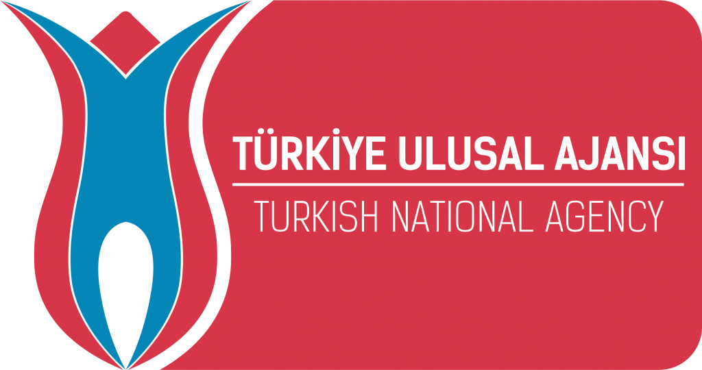
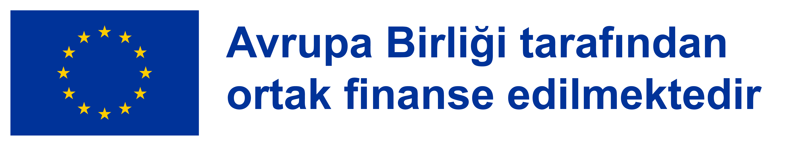
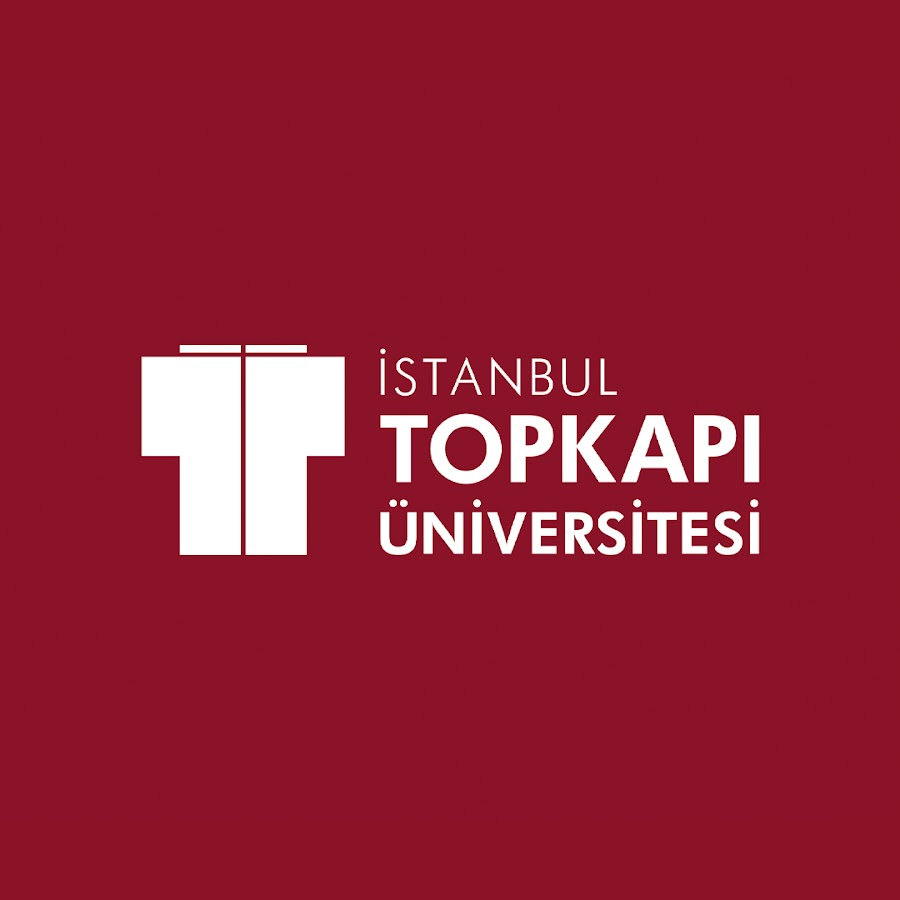

Destekleyen kurumlar




Şu an ne okuyorsan ne de çalışıyorsan, buradan başla. On haftada yapay zekayı öğren, kendi fikrini bir girişime çevir, proje yazmayı ve fon bulmayı öğren.
Ücretsiz · Ön bilgi gerekmez · Katılım sertifikalı · 18–29 yaş



Önce araçları öğreniyorsun, sonra bir fikri işe çeviriyorsun, en sonda o işe fon bulmayı öğreniyorsun. Her hafta elinde gösterebileceğin bir çıktı oluyor.
ChatGPT, Claude, Gemini. Ne yapar, ne yapamaz, nerede yanılır.
İstediğin sonucu almanın yolu. İyi soran, iyi cevap alır.
Metin, afiş, sunum, sosyal medya. Canva ve yapay zeka araçlarıyla.
Web sitesi, basit uygulama ve otomasyon. Tek satır kod bilmeden.
Problem bulma, müşteriyle konuşma, iş modeli kanvası. Fikir ucuz, doğrulama değerli.
Şirket türleri, teknokent başvurusu, vergi muafiyetleri, kuluçka ve ön kuluçka süreçleri.
Pitch deck hazırlama, 3 dakikada anlatma, KOSGEB ve TÜBİTAK destek programları.
İhtiyaç analizi, hedef ağacı, faaliyet planı, göstergeler. Projenin iskeleti.
Erasmus+, AB hibeleri, ulusal ve yerel fonlar. Başvuru formunu birlikte dolduruyoruz.
Kendi fikrini hayata geçir, sınıfa sun, sertifikanı al.
Bu program özellikle şu an eğitimine devam etmeyen ve çalışmayan gençlere öncelik veriyor.
Şu an bir okula kayıtlı değilsen ve çalışmıyorsan öncelik sende. Diploma şartı yok.
Sorun değil, sıfırdan başlıyoruz. Telefon kullanabiliyorsan bu eğitimi de yapabilirsin.
Dersler üniversitenin bilgisayar laboratuvarında. Sen gel, gerisi hazır.
Türkiye'de her dört gençten biri ne eğitimde ne de istihdamda. Bu gençlerin çoğu yeteneksiz değil; sadece kimse onlara bugünün araçlarını göstermemiş ve nereden başlayacaklarını anlatmamış.
Bu proje tam olarak bunu yapıyor. Katılımcılar önce yapay zeka araçlarını kullanmayı öğreniyor, sonra bir fikri iş modeline çeviriyor, en sonunda o iş için proje yazmayı ve fon bulmayı öğreniyor. Amaç sadece bilgi vermek değil; her katılımcının elinde gösterebileceği somut bir çıktıyla programdan ayrılması.
Program Topkapı Üniversitesi tarafından yürütülüyor ve Avrupa Birliği Erasmus+ KA154 Gençlik Katılım Faaliyetleri kapsamında ortak finanse ediliyor. Katılımcılardan hiçbir ücret alınmıyor.
Programı yürüten ekip. Sorularınız için doğrudan ulaşabilirsiniz.

[Unvan, kurum. Kısa bir cümlelik tanıtım.]

[Unvan, kurum. Kısa bir cümlelik tanıtım.]

[Unvan, kurum. Kısa bir cümlelik tanıtım.]

[Unvan, kurum. Kısa bir cümlelik tanıtım.]

Kalabalık bir konferans değil. Herkesin bilgisayar başında olduğu, takıldığında elini kaldırıp soru sorabildiği bir atölye. Eğitmenler dersten sonra da ulaşılabilir.
Formu doldur, üç dakika sürer. Son başvuru [tarih].
Seçilenlere telefon ve e-posta ile haber veriyoruz.
10 hafta, haftada [X] gün, Topkapı Üniversitesi kampüsünde.
Projeni tamamla, sertifikanı ve portfolyonu al.
Evet. Eğitim, materyaller ve sertifika tamamen ücretsiz. Program Erasmus+ KA154 desteğiyle yürütülüyor, katılımcıdan hiçbir ücret alınmıyor.
Evet. Program sıfırdan başlayanlar için tasarlandı. İlk hafta cihazı açmaktan başlıyoruz.
Hayır. Girişimcilik ve teknokent modülleri "nasıl yapılır" öğretiyor. İsteyen kurar, istemeyen bu bilgiyi çalıştığı yerde kullanır.
Erasmus+, KOSGEB, TÜBİTAK ve yerel hibe programlarına başvuru yazmayı öğreniyorsun. Bu beceri hem kendi girişimin hem de çalıştığın kurum için doğrudan para getiren bir beceri.
Sertifika için derslerin en az [%80]'ine katılman gerekiyor. Mazeretli devamsızlıkta telafi imkânı var.
Başvurabilirsin. Ancak kontenjan dolarsa şu an eğitimde ve işte olmayan gençlere öncelik verilir.
[Yüz yüze / karma]. Dersler Topkapı Üniversitesi [kampüs adı] kampüsünde yapılıyor. Ders kayıtları sonrasında Eğitimler sayfasında yayınlanıyor.
Topkapı Üniversitesi onaylı katılım sertifikası veriliyor. Ayrıca eğitim boyunca ürettiğin işlerden bir portfolyo çıkıyor; iş başvurularında asıl işe yarayan o.
Kontenjan [XX kişi] ile sınırlı. Başvurular [son tarih] tarihine kadar açık.
Başvuru formunu doldur